Characterizing Collective Efforts in Content Sharing and Quality Control for ADHD-relevant Content on Video-sharing Platforms
ASSETS '25: The 27th International ACM SIGACCESS Conference on Computers and Accessibility
Hanxiu ‘Hazel’ Zhu, Avanthika Senthil Kumar, Sihang Zhao, Ru Wang, Xin Tong, and Yuhang Zhao
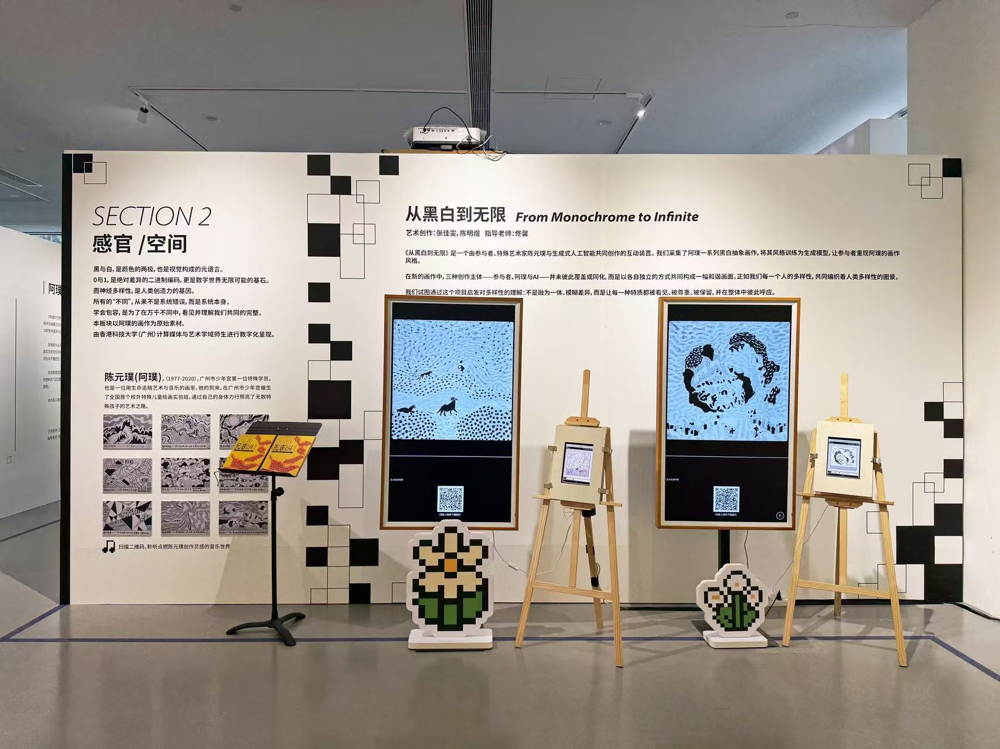
Harmony in Diversity: A Public AI Art Installation Bridging Neurodiversity Through Style Transfer
ICHEC 2025 Art & Demo
Jiawen Zhang, Mingyu Chen, Xin Tong

"I'm Not Confident in Debiasing AI Systems Since I Know Too Little": Hands-on Gender Bias Tutorials for AI Practitioners and Learners
ASIS&T '25: 88th Annual Meeting of the Association for Information Science & Technology
Kyrie Zhixuan Zhou, Jiaxun Cao, Xiaowen Yuan, Daniel E. Weissglass, Zachary Kilhoffer, Madelyn Rose Sanfilippo, Xin Tong

FAIR: Framing AI's Role in Programming Competitions - Understanding How LLMs Are Changing the Game in Competitive Programming
CHI '26: Proceedings of the 2026 CHI Conference on Human Factors in Computing Systems
Dongyijie Primo Pan, Lan Luo, Ji Zhu, Zhiqi Gao, Xin Tong, Pan Hui
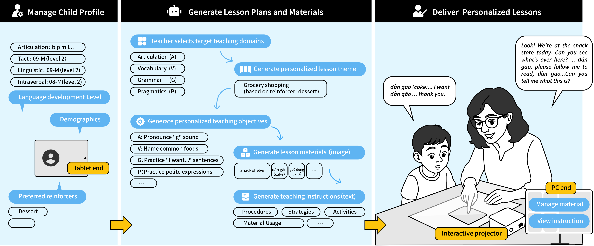
LingoLift: Supporting Educators in Personalized Oral Language Teaching for Autistic Children through Content Generation
CHI '26: Proceedings of the 2026 CHI Conference on Human Factors in Computing Systems
Jiawen Zhang, Dongyijie Primo Pan, Li Wang, Pan Hui, Xin Tong

Ink Blossom: An Interactive Journey of AI-Poetry
VINCI '25: The 18th International Symposium on Visual Information Communication and Interaction
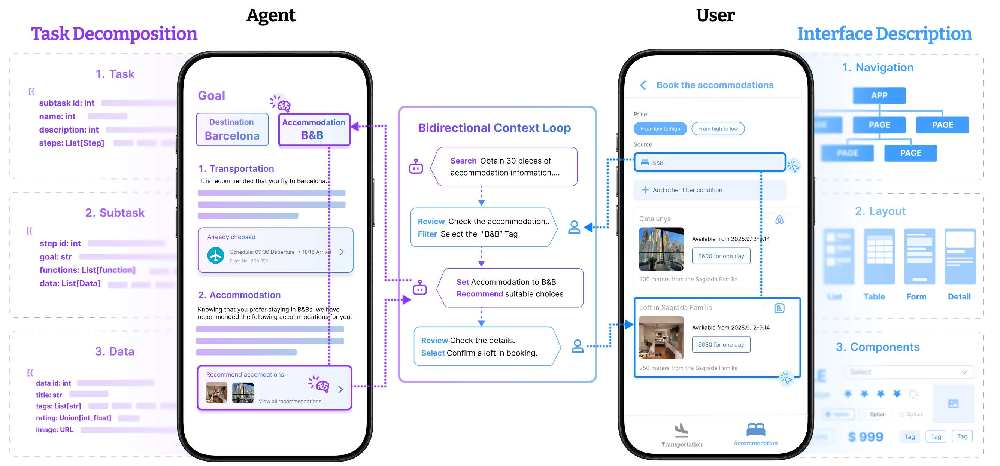
DuetUI: A Bidirectional Context Loop for Human-Agent Co-Generation of Task-Oriented Interfaces
arXiv Preprint · 2025
Yuan Xu, Shaowen Xiang, Yizhi Song, Ruoting Sun, Xin Tong

Reviving Mural Art through Generative AI: A Comparative Study of AI-Generated and Hand-Crafted Recreations
CHI '25: Proceedings of the 2025 CHI Conference on Human Factors in Computing Systems
Shuo Zhao, Yifei Huang, Xiaoyang He, Xin Tong, Xin Li, and Dan Wu
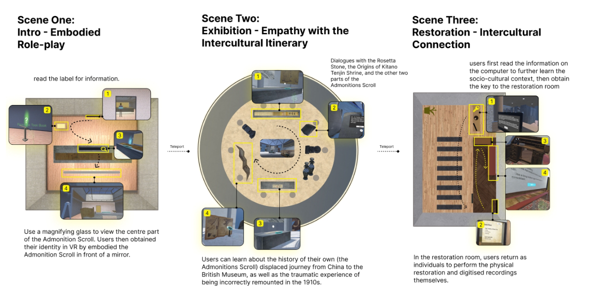
Immersive Biography: Supporting Intercultural Empathy and Understanding for Displaced Cultural Objects in Virtual Reality
CHI '25: Proceedings of the 2025 CHI Conference on Human Factors in Computing Systems
Ke Zhao, Ruiqi Chen, Xiaziyu Zhang, Chenxi Wang, Siling Chen, Xiaoguang Wang, Yujue Wang, and Xin Tong
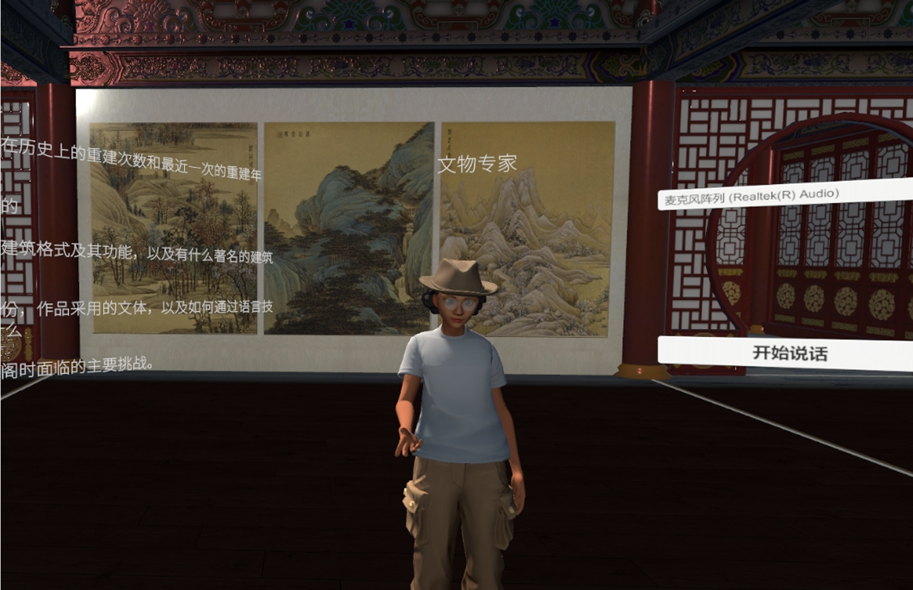
Exploring LLM-Powered Role and Action-Switching Pedagogical Agents for History Education in Virtual Reality
CHI '25: Proceedings of the 2025 CHI Conference on Human Factors in Computing Systems
Zihao Zhu, Ao Yu, Xin Tong, and Pan Hui
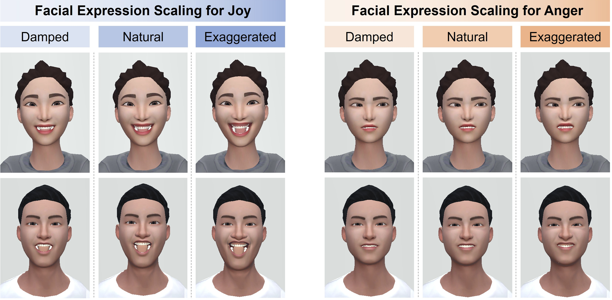
Raise Your Eyebrows Higher: Facilitating Emotional Communication in Social Virtual Reality Through Region-Specific Facial Expression Exaggeration
CHI '25: Proceedings of the 2025 CHI Conference on Human Factors in Computing Systems
Xueyang Wang, Sheng Zhao, Yihe Wang, Howard Ziyu Han, Xinge Liu, Xin Yi, Xin Tong, Hewu Li
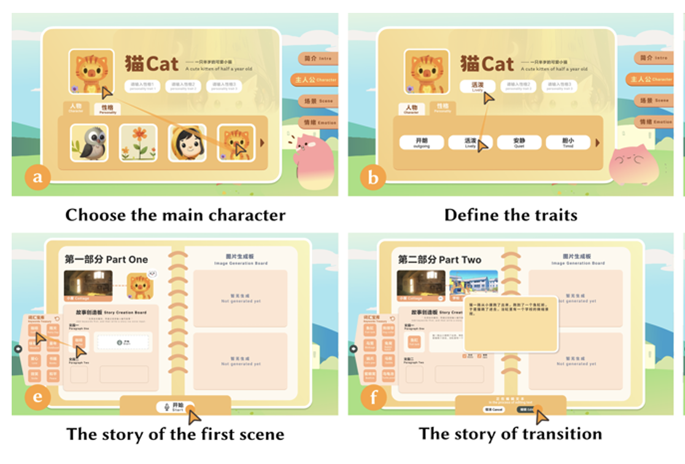
From Words to Wonder: Designing and Evaluating an AI-Empowered Creative Storytelling System for Elementary Children
CHI '25: Proceedings of the 2025 CHI Conference on Human Factors in Computing Systems
Min Fan, Xinyue Cui, Wanqing Ma, Haiyan Li, Xin Tong, Lin Yang, Yonghui Wang
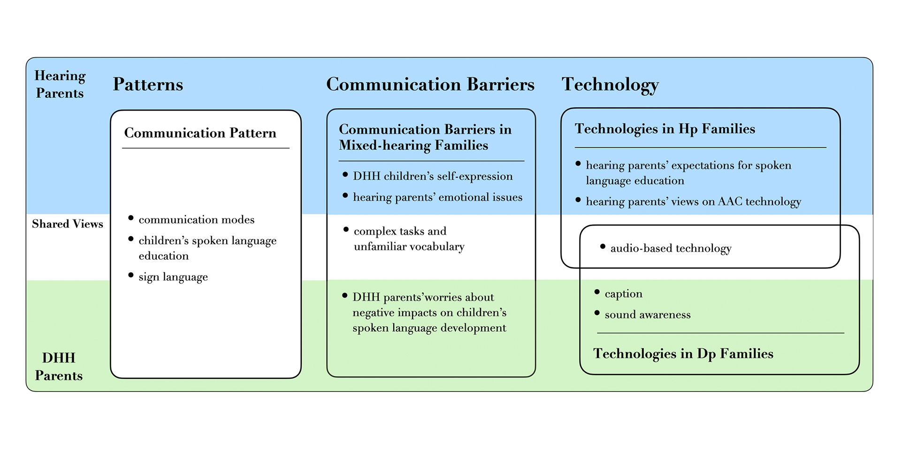
Parental Perceptions of Children's d/Deaf Identity Shaping Technology Use: A Qualitative Study on Communication Technologies in Mixed-hearing Families
CHI EA '25: Extended Abstracts of the CHI Conference on Human Factors in Computing Systems
Keyi Zeng, Jingyang Lin, Ruiqi Chen, RAY LC, Pan Hui, and Xin Tong
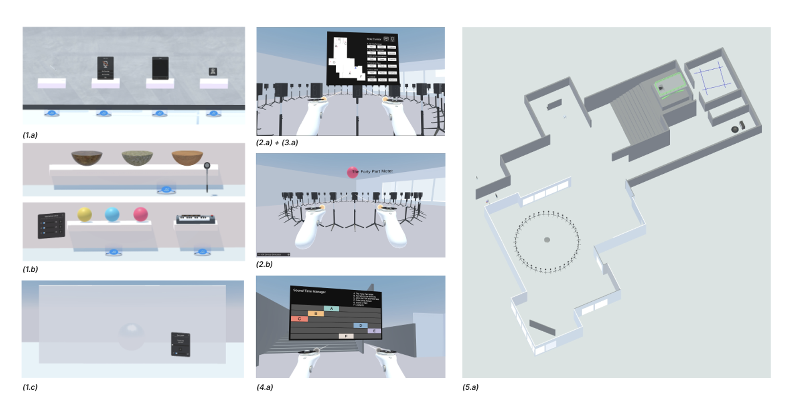
Resonix: Prototyping VR for Fostering Remote Collaboration in Sound Art Curation
CHI EA '25: Extended Abstracts of the CHI Conference on Human Factors in Computing Systems
Zijun Wan, Yuxuan Guo, Kexin Nie, Haowei Xiong, Xudong Cai, Fanjing Meng, Xin Tong
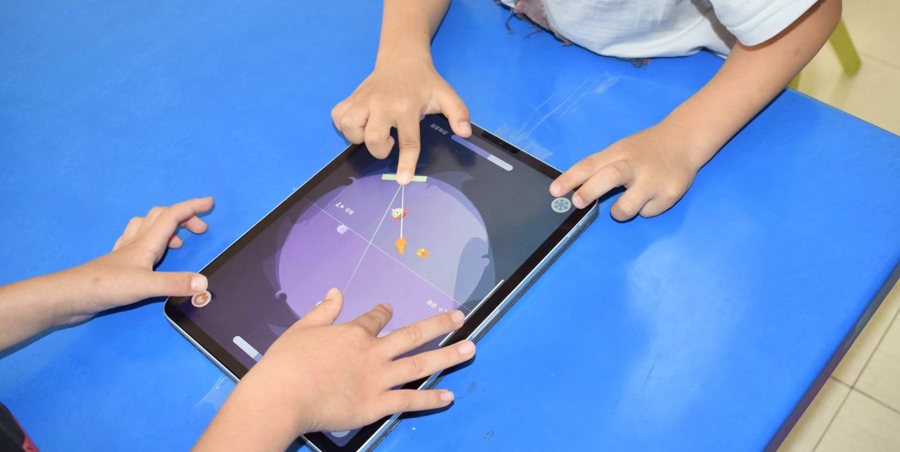
StarRescue: the Design and Evaluation of A Turn-Taking Collaborative Game for Facilitating Autistic Children's Social Skills
CHI '24: Proceedings of the 2024 CHI Conference on Human Factors in Computing Systems
Rongqi Bei, Yajie Liu, Yihe Wang, Yuxuan Huang, Ming Li, Yuhang Zhao, and Xin Tong

Technology-Mediated Non-pharmacological Interventions for Dementia: Needs for and Challenges in Professional, Personalized and Multi-Stakeholder Collaborative Interventions
CHI '24: Proceedings of the 2024 CHI Conference on Human Factors in Computing Systems. 👑Best Paper.
Yuling Sun, Zhennan Yi, Xiaojuan Ma, Junyan Mao, and Xin Tong
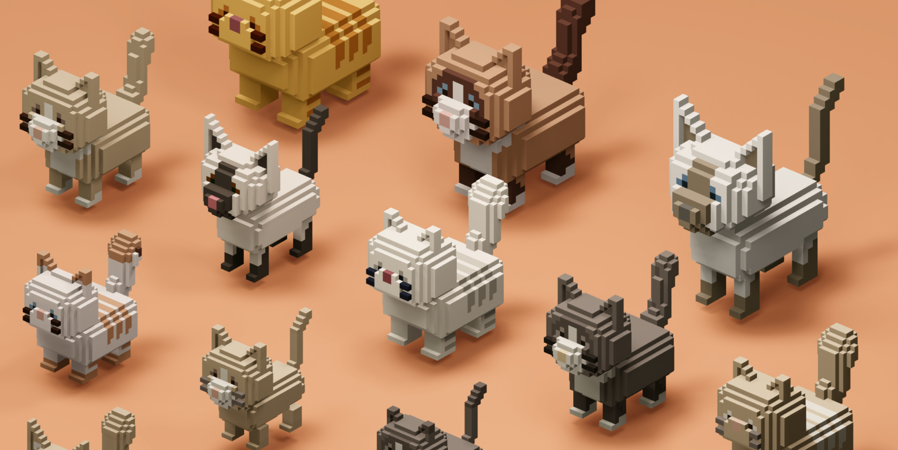
“I Keep Sweet Cats In Real Life, But What I Need In The Virtual World Is A Neurotic Dragon": Virtual Pet Designs With Personality Patterns
The Eleventh International Symposium of Chinese CHI (Chinese CHI 2023), Honorble Mention
Hongni Ye, Ruoxin You, Kaiyuan Lou, Yili Wen, Xin Yi, and Xin Tong.
Exploring Designers’ Perceptions and Practices of Collaborating with Generative AI as a Co-creative Agent in a Multi-stakeholder Design Process: Take the Domain of Avatar Design as an Example
CHCHI '23: Proceedings of the Eleventh International Symposium of Chinese CHI.
Qingyang He, Weicheng Zheng, Hanxi Bao, Ruiqi Chen, and Xin Tong
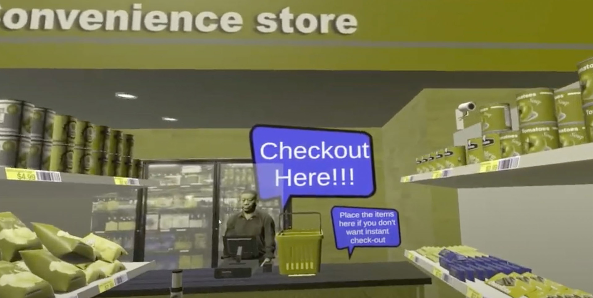
BlueVR: Design and Evaluation of a Virtual Reality Serious Game for Promoting Understanding towards People with Color Vision Deficiency
CHIPLAY'23: Proceedings of the ACM on Human-Computer Interaction, Volume 7, Issue CHI PLAY
Ruoxin You, Yihao Zhou, Weicheng Zheng, Yiran Zuo, Mayra Donaji Barrera Machuca, and Xin Tong.

WooGu: Exploring an Embodied Tangible User Interface for Supporting Children to Learn Farm-to-Table Food Knowledge
IDC '23: Proceedings of the 22nd Annual ACM Interaction Design and Children Conference
Hongni Ye, Tong Wu, Lawrence H Kim, Min Fan, Xin Tong
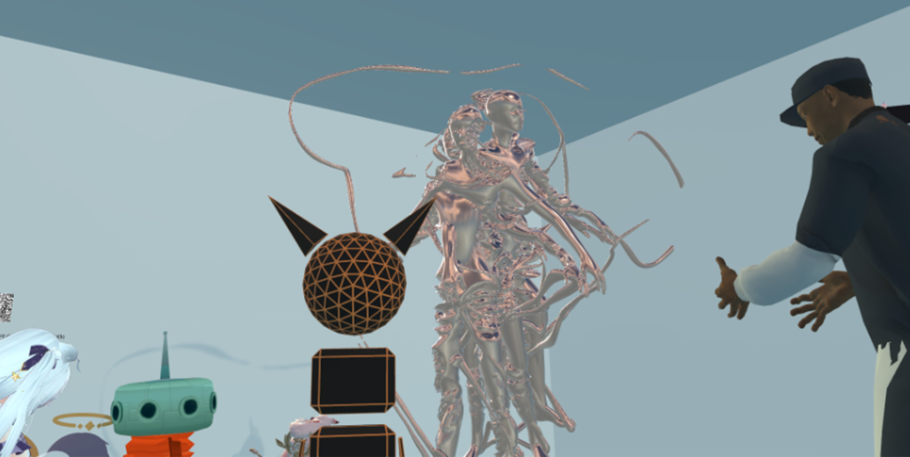
DreamVR: Curating an Interactive Exhibition in Social VR Through an Autobiographical Design Study
CHI '23: Proceedings of the 2023 CHI Conference on Human Factors in Computing Systems.
Jiaxun Cao, Qingyang He, Zhuo Wang, RAY LC, and Xin Tong
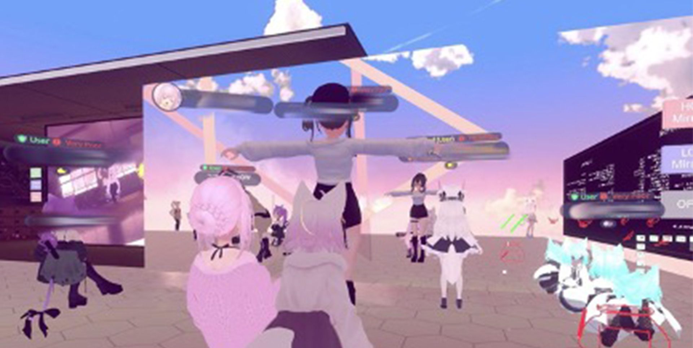
I Am a Mirror Dweller: Probing the Unique Strategies Users Take to Communicate in the Context of Mirrors in Social Virtual Reality
CHI '23: Proceedings of the 2023 CHI Conference on Human Factors in Computing Systems.
Kexue Fu, Yixin Chen, Jiaxun Cao, Xin Tong, and RAY LC
Twilight Rohingya: The Design and Evaluation of Different Navigation Controls in a Refugee VR Environment
2022 International Conference on Cyberworlds (CW)
Hongni Ye, Chaoyu Zhang, Hongsheng Xu, LC Ray, Xin Tong
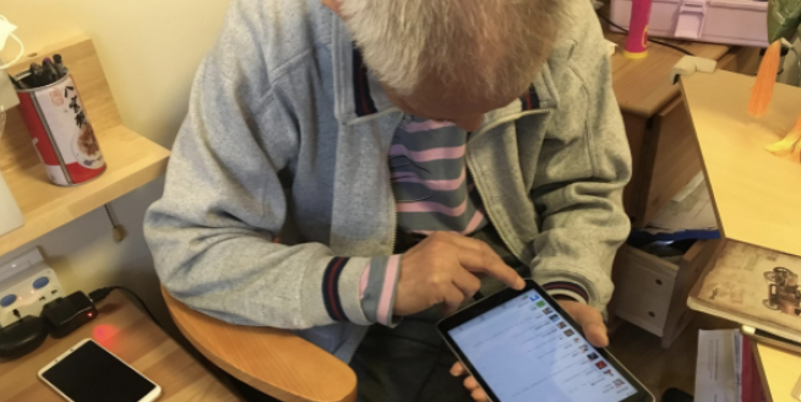
"I Never Imagined Grandma Could Do So Well with Technology": Evolving Roles of Younger Family Members in Older Adults' Technology Learning and Use
2022 Proceedings of the ACM on Human-Computer Interaction, Volume 6, Issue CSCW2
Xinru Tang, Yuling Sun, Bowen Zhang, Zimi Liu, RAY LC, Zhicong Lu, and Xin Tong.
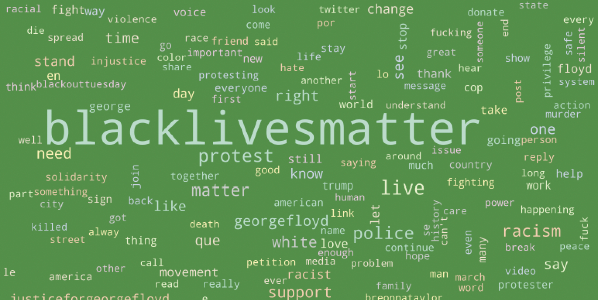
What are People Talking about in #BackLivesMatter and #StopAsianHate?: Exploring and Categorizing Twitter Topics Emerged in Online Social Movements through the Latent Dirichlet Allocation Model
AIES '22: Proceedings of the 2022 AAAI/ACM Conference on AI, Ethics, and Society
Xin Tong, Yixuan Li, Jiayi Li, Rongqi Bei, and Luyao Zhang
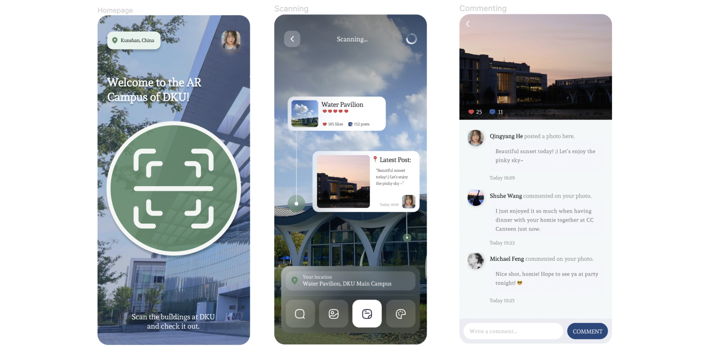
DKU AR Campus
Exploring Social Interactions with Collocated People and Connections with Surrounding Environment in an Augmented Reality Context.

GenRole: Leveraging Generative AI to Personalize Role Play for Social Skill Development in Autistic Children

EmojiCaption

NPC Cards in VR Cultural Heritage

The Night Revels of Han Xizai
This project aims to exam the trustworthiness and credibility of LLM-empowered cultural heritage narrative.

Glitter
Liwen He, Zhaowen Deng, Weibo Li, Ziheng Tang, Yixuan Li, Yutong Ren, Xin Tong
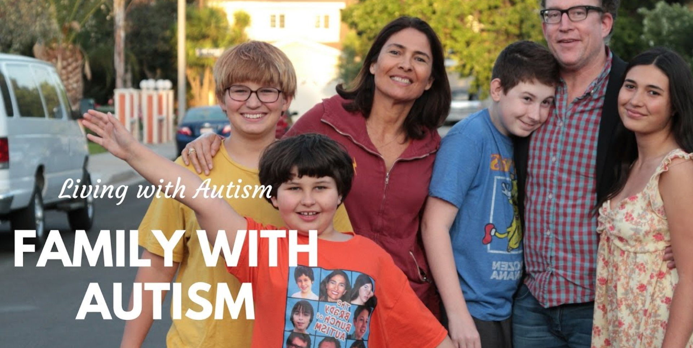
Privacy for Families with Autism
This study explores the privacy issues among families with autism by interviewing parents of children with autism.
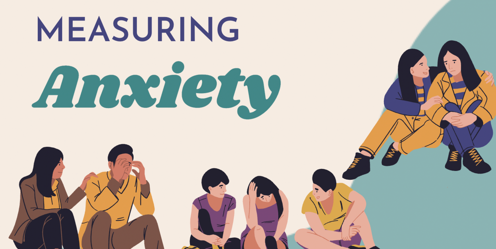
Measuring Anxiety
The goal of this study is to use machine learning algorithms to measure, predict and design interventions for stress and anxiety.
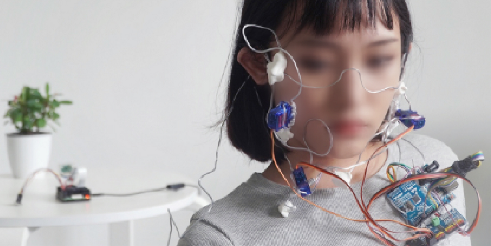
Entangled Habitation
We explore the entangled habitation design concept to advocate a more-than-human perspective in human-nature interaction design.